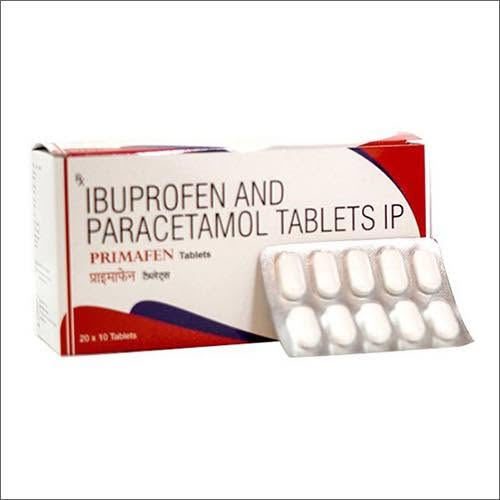

Improper use of over-the-counter drugs like acetaminophen/paracetamol (Tylenol) and ibuprofen (Advil) can cause serious liver and kidney damage.
This is rigorously proven.
Keep this in mind the next time you hear fear-mongering about natural foods and supplements, e.g. how eating turmeric and drinking green tea can damage your liver. The major problem is misuse of over-the-counter drugs. Not healthy foods that have been safely consumed by billions of people for thousands of years. Consuming these healthy foods in reasonable amounts similar to how they have been consumed traditionally (or the equivalent amount in a reputable supplement) is very unlikely to be dangerous.
#acetaminophenHD #ibuprofenHD #greenteaHD #turmericHD #liverHD #kidneysHD
Paracetamol and Ibuprofen are not snacks. They can destroy your liver and kidneys.
Now, pay attention and walk with me. Let me tell you something about them.
Every week in Tamale, someone walks into a hospital with yellowing eyes, swollen feet, or sudden confusion (that's liver and kidney disease). What most of them have in common is a simple habit they never thought dangerous: taking painkillers like groundnuts.
Paracetamol is one of the most trusted drugs in the world. When used correctly, it can relieve pain and reduce fever. But when taken in large amounts, or used too frequently, it becomes toxic to the liver. Many people believe it is safe simply because it is common. That belief is killing people slowly.
Ibuprofen is no better when misused. It belongs to a group of drugs called NSAIDs )non-steroidal anti-inflammatory drugs). While it can help with pain and inflammation, it can also damage the lining of your stomach, cause bleeding, and lead to kidney failure. The kidneys, like the liver, will not complain loudly at first. But one day, the damage will speak for itself.
Here in Tamale, the misuse of these drugs is often treated as normal. A student wakes up tired, takes Paracetamol. A mechanic feels back pain, adds Diclofenac. A woman with menstrual cramps swallows a cocktail of painkillers from three different brands, all in one day. Some take them on an empty stomach. Some take them daily, even when there is no pain, “just in case.”
And we have not even mentioned Tramadol yet, the almighty friend if the boyz boyz.
Let’s be clear. Tramadol is not your friend. It is an opioid, a drug designed for very specific types of pain and prescribed under supervision. If you are taking Tramadol to feel strong, to work longer, to please someone, or to escape your own thoughts, understand that you are borrowing time from your future. Every dose chips away at your brain’s natural function. It pulls you slowly into dependency, and once that grip takes hold, your life begins to revolve around the next tablet. It will not end well.
Medicine is not magic. It is chemistry. Every tablet you take interacts with your blood, your organs, and your nervous system. When you take too much, or mix drugs carelessly, you are forcing your body to carry a weight it was never built to hold.
If you experience frequent headaches, constant back pain, or chronic fatigue, you do not need more painkillers. You need answers. You need proper diagnosis. There might be a deeper issue behind the pain. You deserve to know what it is.
Do not wait until you collapse at work. Do not wait until your urine turns dark or your eyes turn yellow. The hospital is not a last resort. It is where solutions begin.
Protect your liver. Respect your kidneys. Stop medicating based on guesswork and emotion.
You are young now. But the decisions you make today will shape the body you live in ten years from now. Be wise. Take responsibility. Choose care over convenience.
Your health is your future. Safeguard it.
